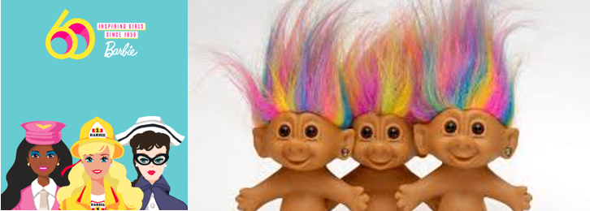
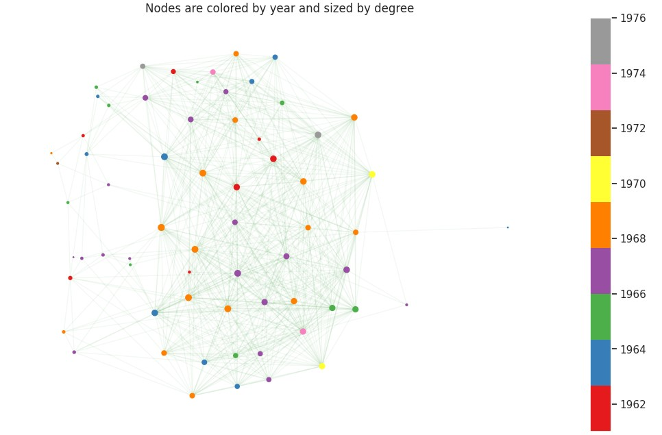
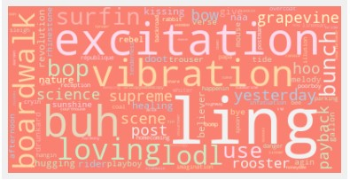

The 60's
Oh, those times where TV was ten times smaller and a hundred times wider, where flying to the moon was only possible with Frank Sinatra, but you could always go Surfing USA with The Beach Boys and just live Like a Rolling Stone…
We are in the decade when Barbie was born (and the Danish Troll Dolls too!). The bikes we now call retro come from this period and the famous tie-dye trend that just came back to our closest is just a comeback of the 60’s fashion!
The Sound of Music belongs to this decade. But more importantly, how did this decade sound? 74 songs from this decade are in our top 500 list!
The middle of the decade was the top for music. More than half of the songs represented were created between 1964 and 1966. This is the age for Rock lovers: The Beatles, The Rolling Stones, Pink Floyd, Simon & Garfunkel…
This decade has a wide gender diversity at the very top. The centrality of nodes reflects a wide variety of genres. From Gospel, to Country, without forgetting blues and soul. This diversity in music is a reflection of the society of this decade; The Cultural Decade is also called. It was a time of changes and social revolution, time of the Flower Power. All these changes are also reflected in the lyrics: Vibration, excitation, science, rebel…
The 60’s prove it, music is a reflection of the soul; but not just of the singer but also of the society's.